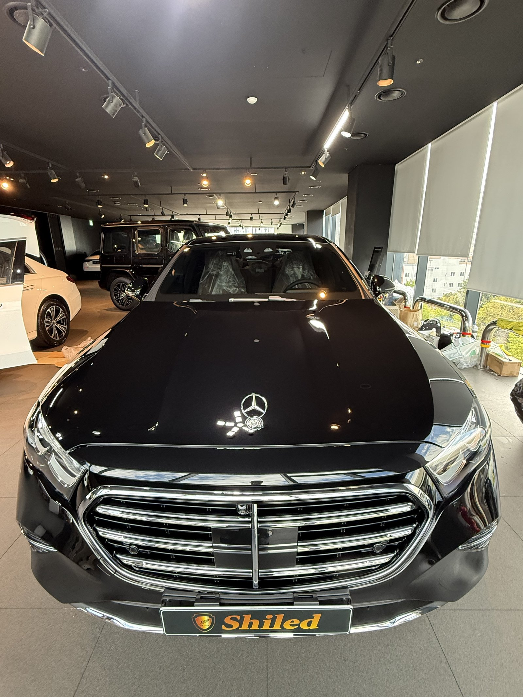
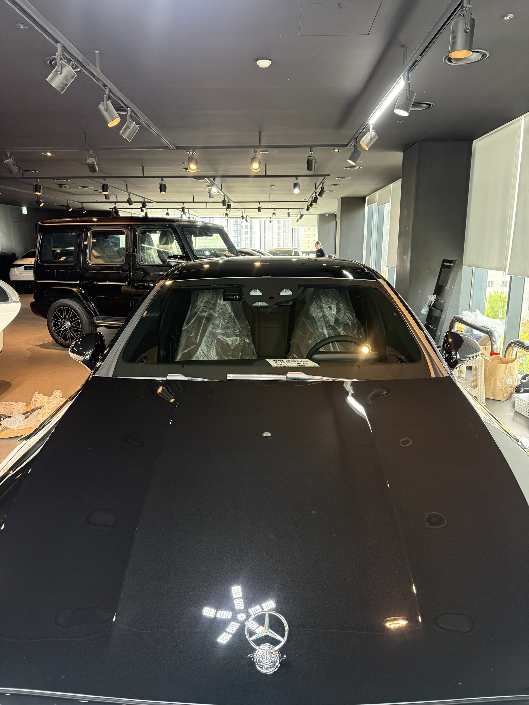
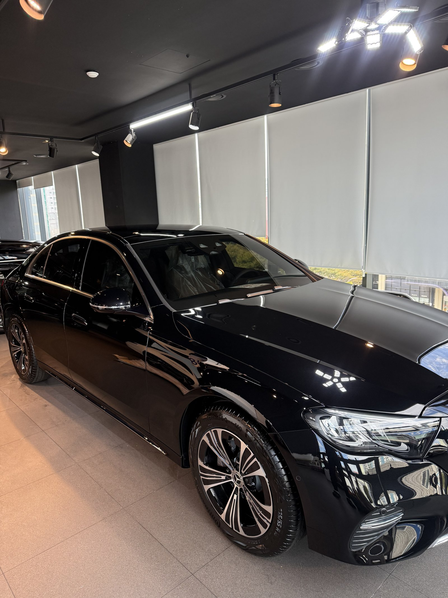
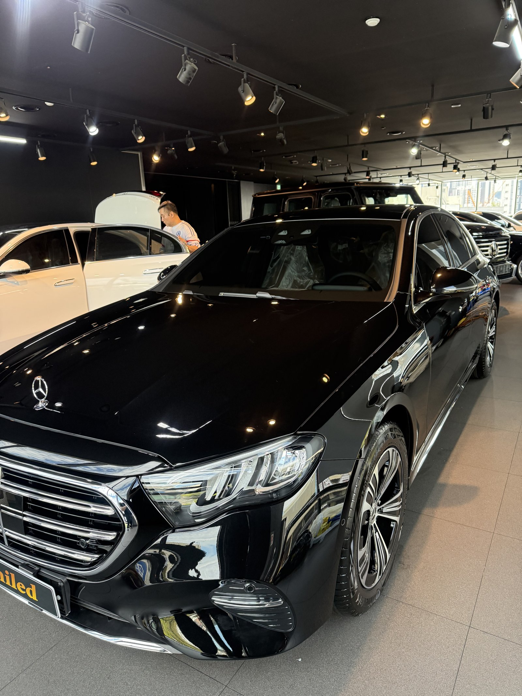
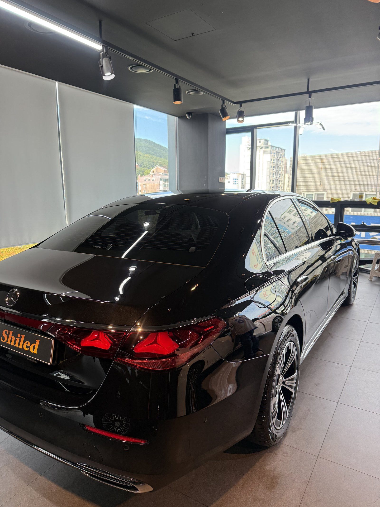
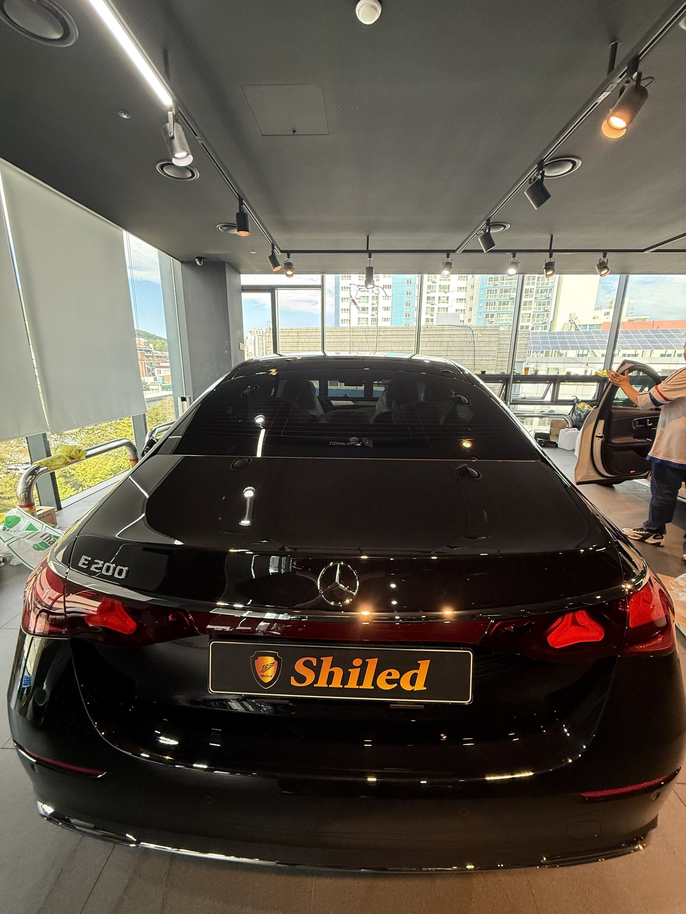
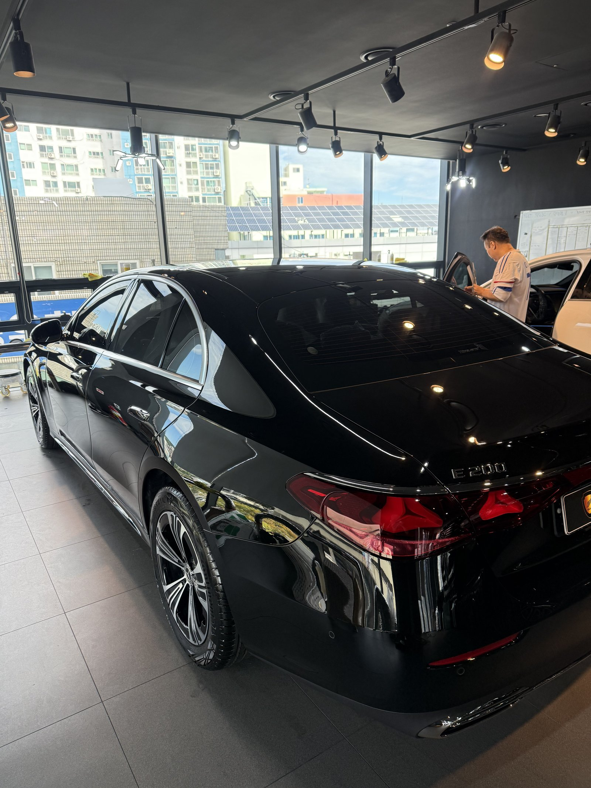
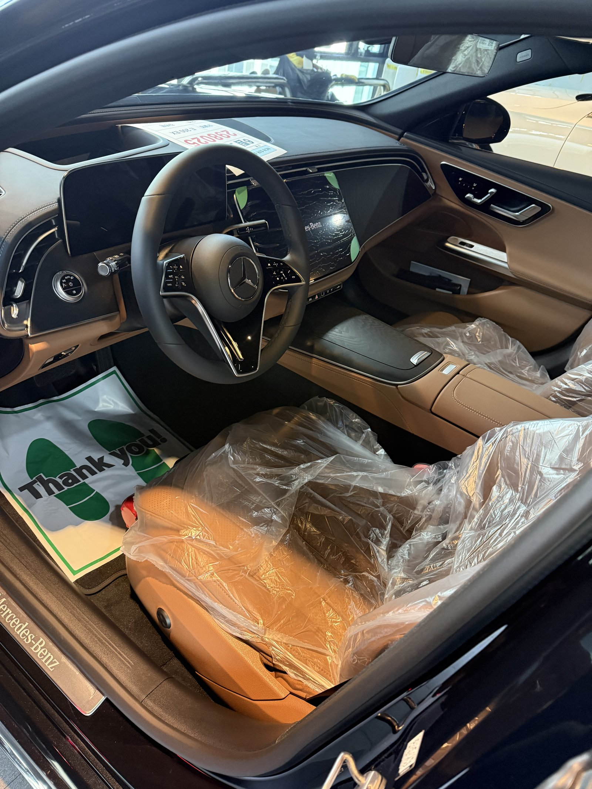
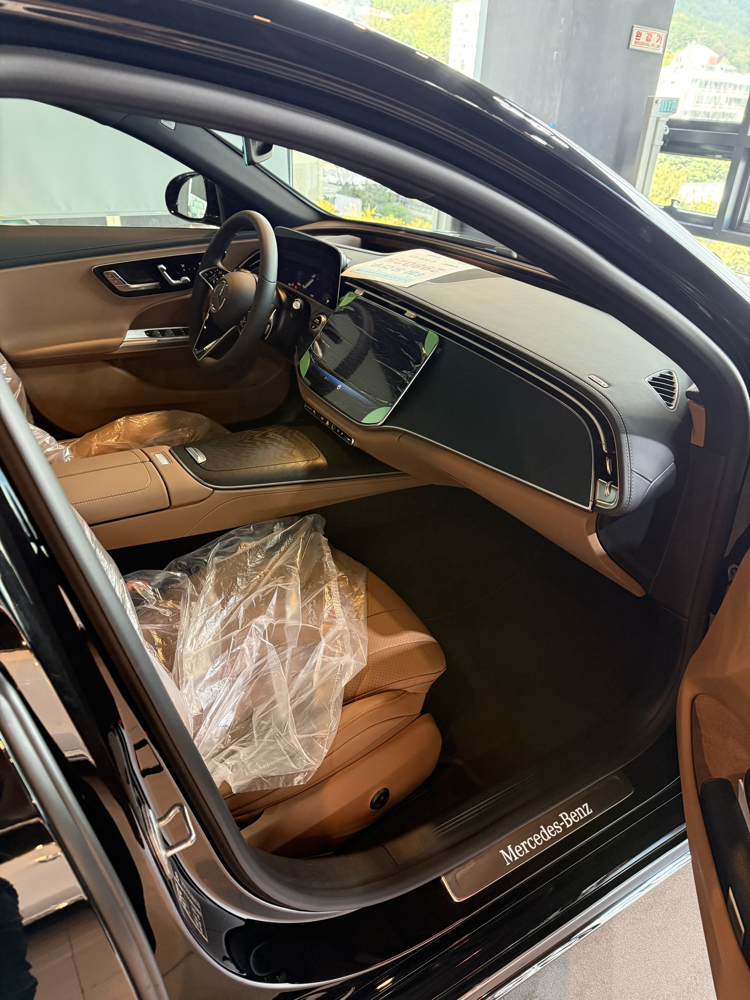
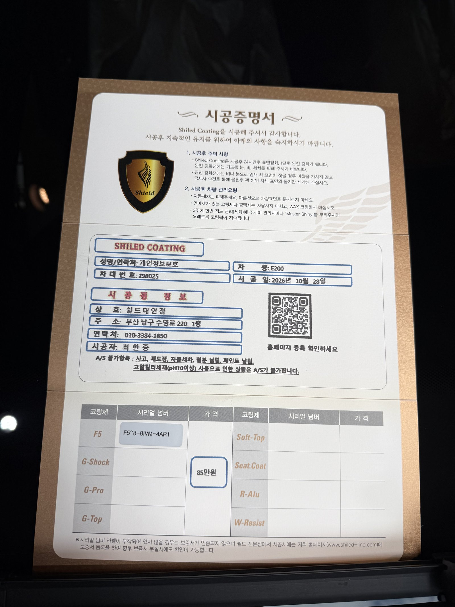

벤츠 E200 익스클루시브, 검정 신차입니다.
검정 차는 조명 아래에서 숨길 게 없습니다.
출고 전 F5로 진행한 부산 유리막코팅 기록입니다.

검정 보닛은 무엇으로 점검하나요?
천장 트랙 조명이 보닛 위에 줄지어 비치는 모양으로 봅니다.
조명 줄이 끊기지 않고 곧게 이어지면 면이 고르게 정리된 것입니다.
잔여물이 남은 자리는 조명이 뿌옇게 번집니다.
보닛 끝 스탠딩 엠블럼 둘레까지 조명을 따라가며 확인했습니다.



뒤쪽은 어떤 빛으로 봤나요?
뒤는 창가 쪽 낮 빛을 받게 두고 봤습니다.
트렁크와 루프 라인에 바깥 빛이 길게 맺혔습니다.
테일램프 라인 위 검정 면에 얼룩이 없는지 확인했습니다.



기술자의 팁
검정 차는 마른 먼지를 그대로 닦으면 잔기스가 바로 보입니다. 먼지가 앉았을 땐 물로 먼저 흘려보낸 뒤 닦아 주십시오.
검정 E200 익스클루시브에 F5를 올린 이유
F5는 색감의 깊이와 글로시함에 특화된 코팅입니다.
검정은 F5를 올렸을 때 깊이 차이가 가장 잘 드러나는 색입니다.
실내는 탠 가죽에 넓은 디스플레이가 이어지는 구성입니다.
코팅제는 대표가 직접 개발·제조한 제품입니다.
이번 부산 유리막코팅은 F5 싱글로 진행했습니다.


시공증명서도 함께 드립니다
모든 시공 차량에 시공증명서를 드립니다.
차종·시공일·코팅제 시리얼 번호가 적혀 있고, 홈페이지에 등록해 보증을 받으실 수 있습니다.

차종·시공일·코팅제 시리얼이 기재된 시공증명서
자주 묻는 질문
Q. 검정 차에 F5를 많이 하는 이유는요?
A. F5는 색감의 깊이에 특화된 코팅이라 검정의 깊은 광을 살리는 데 잘 맞습니다.
Q. 검정 차는 잔기스가 왜 잘 보이나요?
A. 빛을 반사하는 면이 어두워 작은 흠집도 대비가 커집니다. 마른 먼지를 그대로 닦지 않는 것이 가장 중요합니다.
Q. 코팅 잔여물은 어떻게 확인하나요?
A. 조명이 비치는 모양을 따라 봅니다. 조명이 번지는 자리가 잔여물 자리라 그 부분을 다시 닦아냅니다.
Q. 왜 출고 전에 코팅하나요?
A. 도장면이 가장 깨끗할 때 올린 코팅이 가장 오래갑니다. 운행과 세차로 잔기스가 생기기 전에 입혀두는 것이 핵심입니다.
Q. 쉴드광택 위치와 예약은 어떻게 하나요?
A. 부산 남구 유엔로220 1F 쉴드광택입니다. 예약·상담은 010-3384-1850, 대표 최한중이 직접 상담하고 책임 시공합니다.
새 차일수록 시작점이 다릅니다. 가장 깨끗할 때 입혀두십시오.
제품을 직접 만드는 사람이 직접 시공합니다.
부산에서 신차 유리막코팅을 고민 중이시면 편하게 연락 주십시오.
어떤 차를 타냐보다 어떻게 타냐가 중요합니다~!
시공 중에는 전화를 받지 못할 때가 많습니다.
카카오톡으로 차종과 원하시는 시공을 남겨주시면 확인 후 답변드립니다.
쉴드광택 · 부산 남구 유엔로220 1F · 대표 최한중